1. 登录Garmin的官方网站
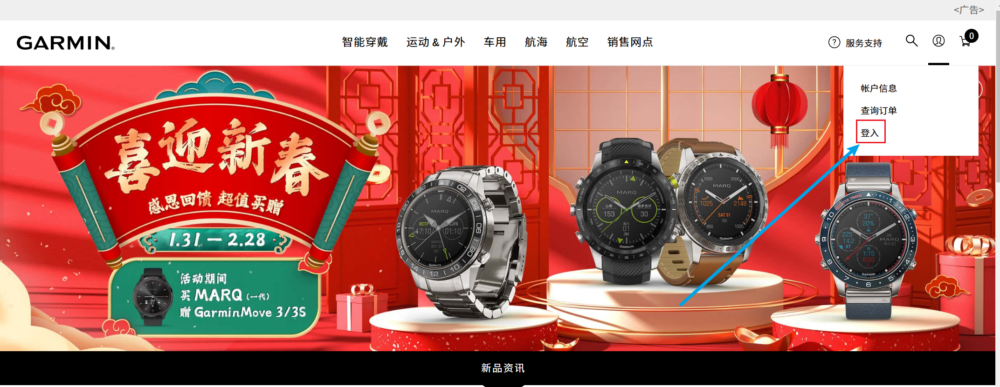
2. 进入系统之后，翻到页面最下方，点击Garmin Connect
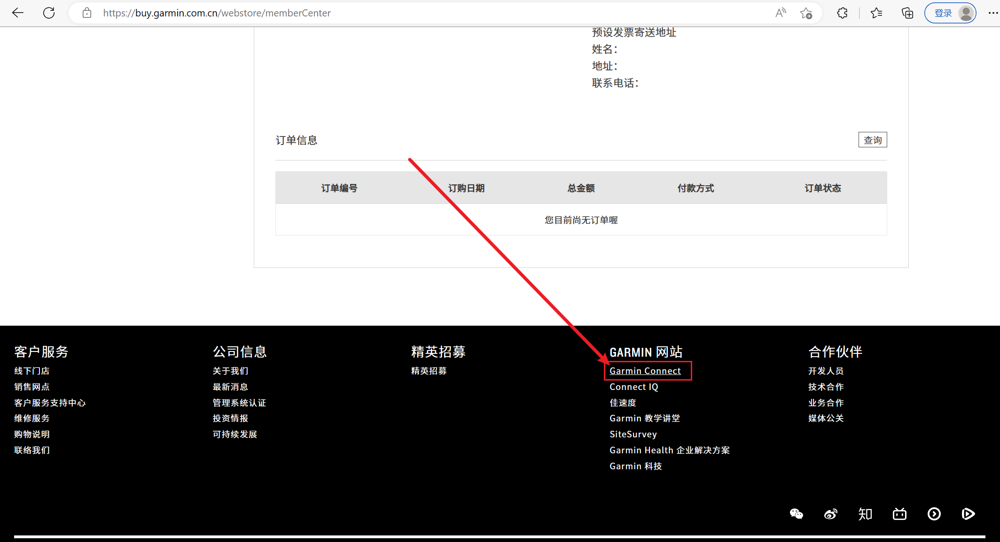
3. 在Garmin Connect的菜单栏中选择“活动”-“所有活动”
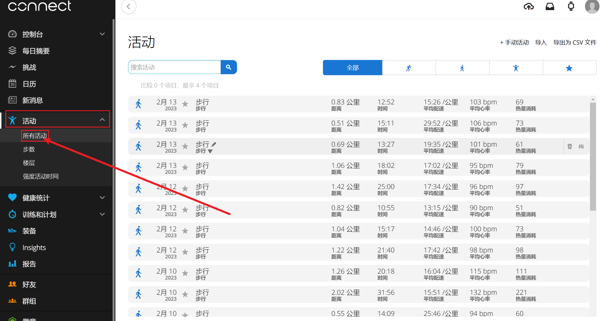
3.1 选择所有跑步活动，导出为csv，注意，文件命名为"Activities-run"
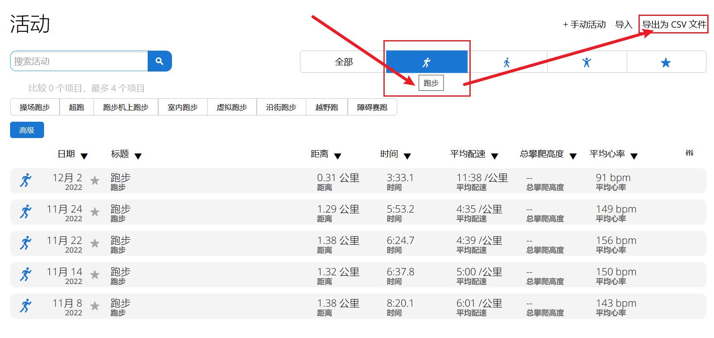
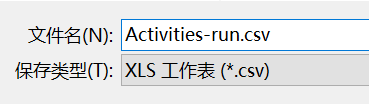
3.2 选择所有步行活动，导出为csv，注意，文件命名为"Activities-walk"
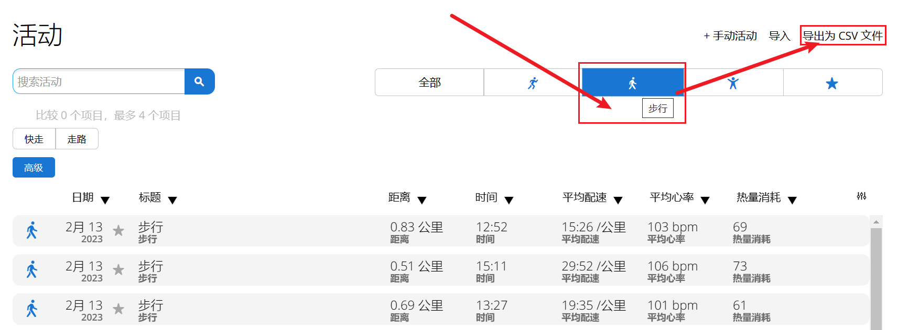
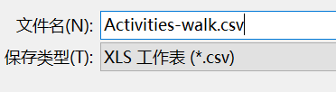
3.3 选择所有其他活动，导出为csv，注意，文件命名为"Activities-breath"
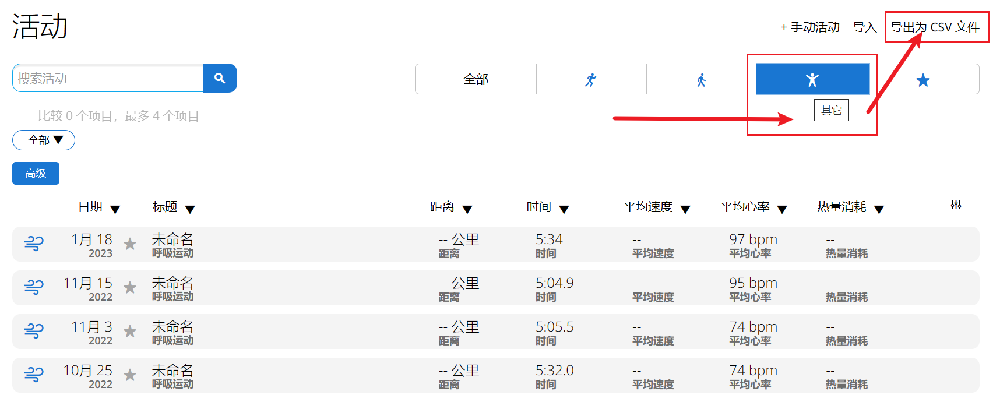
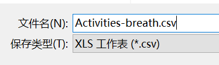
4. 在Garmin Connect的菜单栏中选择“报告”-“健康 & 健身”-“睡眠时长”
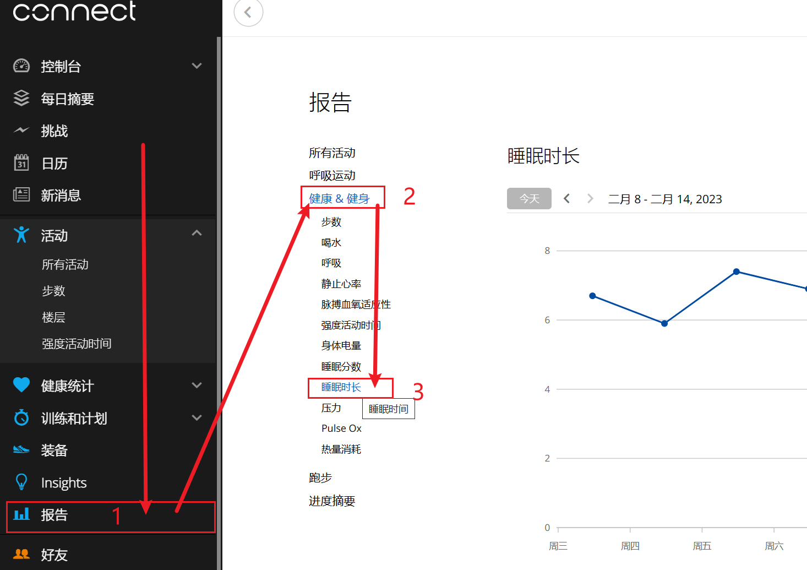
4.1 选择近7天的数据即可，导出为csv，文件命名不需要修改，保持默认的“睡眠.csv”即可（如果文件名称不是“睡眠.csv”，请修改成“睡眠.csv”）
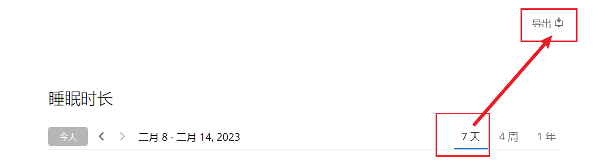
5. 返回ReViveLand的数据同步页面，拖拽或者选择上面四个文件到传输列表，点击“上传到服务器”按钮，等待服务器的分析。
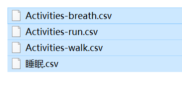
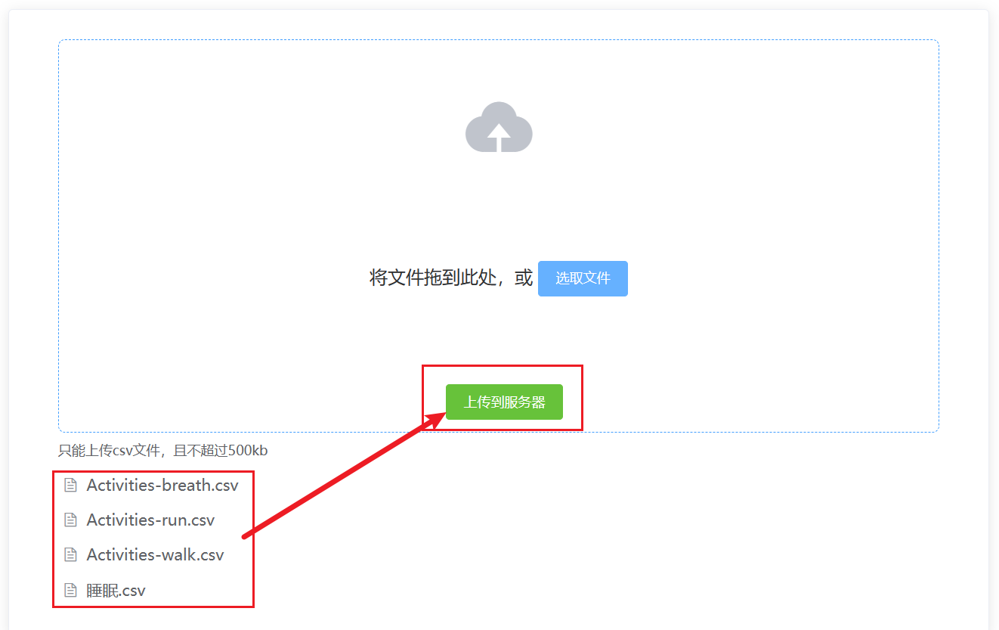